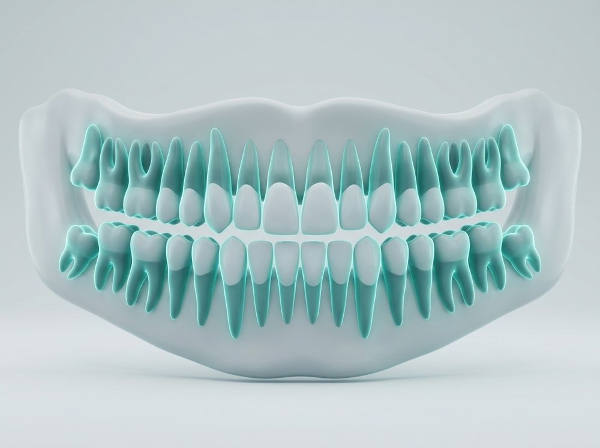
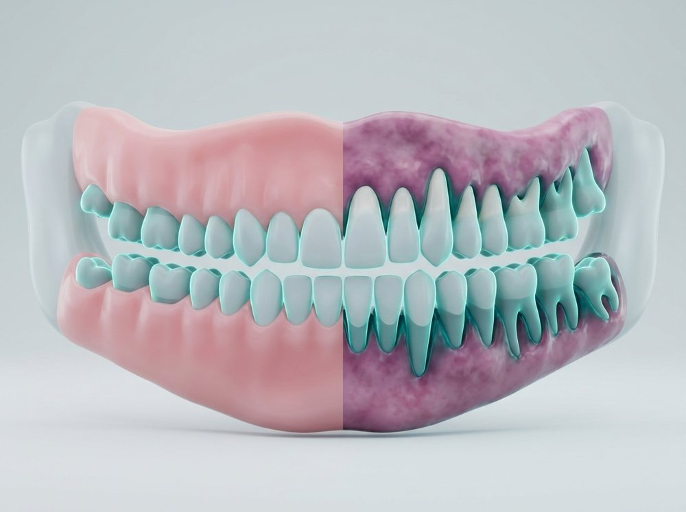
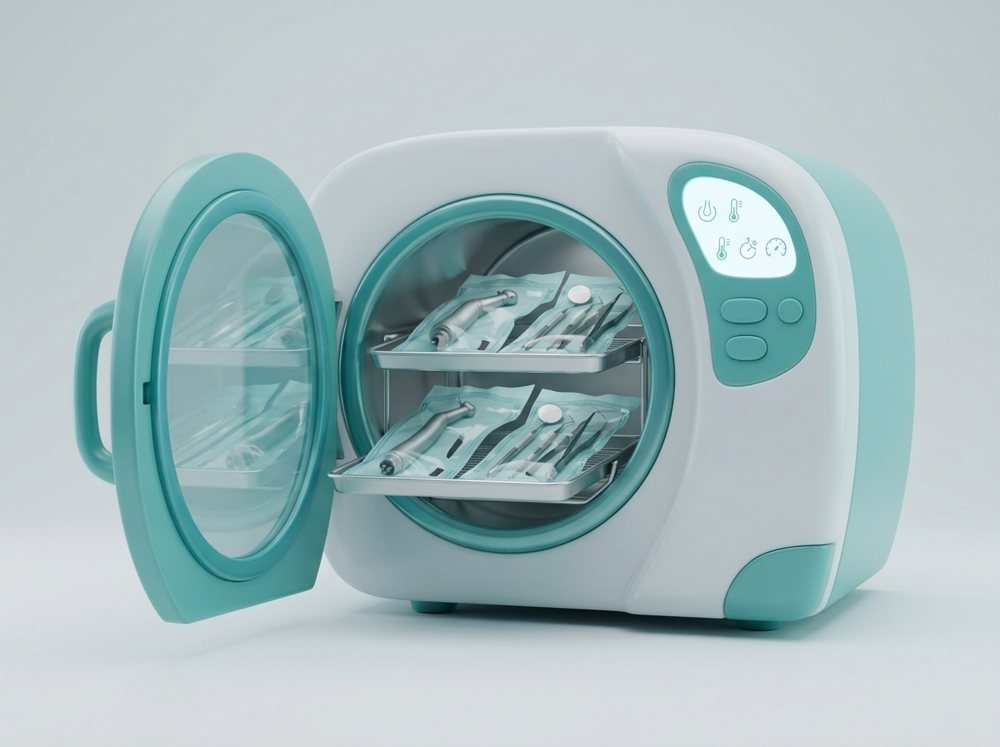
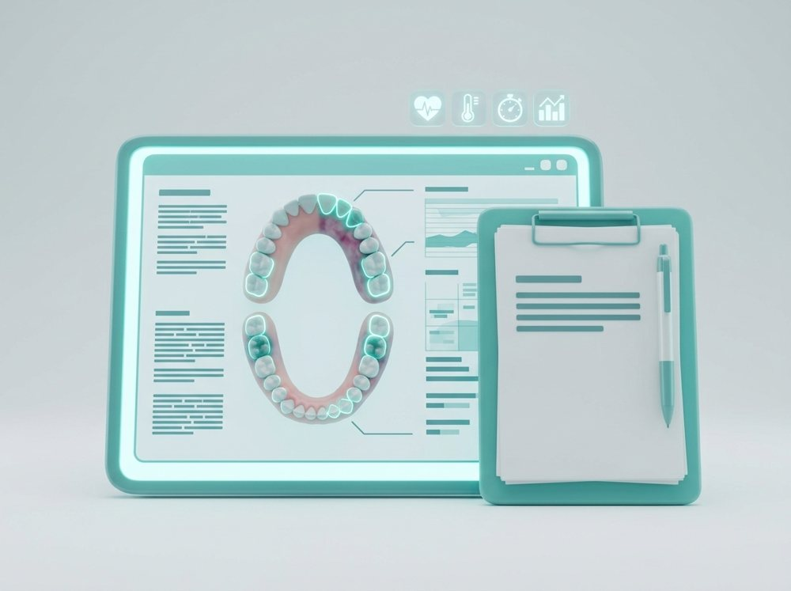

Learning resources

Dental Radiology Basics
Learn to take, read and report dental X-rays safely.
- Radiation safety
- Reading panoramic X-rays
- Common findings

Periodontology Essentials
Understand gum disease from diagnosis to long term care.
- Gum health assessment
- Scaling and root planing
- Maintenance plans

Infection Control Guide
A practical guide to sterilisation and clinic hygiene.
- Instrument sterilisation
- Surface disinfection
- Waste handling

Patient Records Handbook
How to keep clear, accurate and private patient records.
- Charting standards
- Consent forms
- Data privacy

Lecture Slide Pack
Ready to teach slides for oral health and clinical topics.
- Editable slides
- Teaching notes
- Image library

Assessment Question Bank
Question sets with answer keys for classroom assessment.
- MCQs and short answers
- Answer keys
- Difficulty tags

Exam Revision Notes
Short, clear notes for dental students before exams.
- Topic summaries
- Diagrams
- Quick quizzes

Clinical Skills Checklist
Step by step checklists to practise procedures confidently.
- Chairside setup
- Procedure steps
- Self assessment

Case Study: Full Mouth Rehabilitation
A complete case from first exam to final restoration.
- Diagnosis and plan
- Treatment stages
- Results and review
Your learning journey
Choose a topic
Pick a course or resource that fits your level.
Learn your way
Read, watch and study at your own pace.
Practise with cases
Apply what you learn to real clinical cases.
Ask our experts
Send us your questions any time.
From our knowledge blog

What is new in digital dentistry
A short look at scanners, 3D printing and guided surgery.

Five tips for teaching oral hygiene
Simple methods that help patients remember their routine.

Reading your first panoramic X-ray
A beginner friendly walk through the main structures.